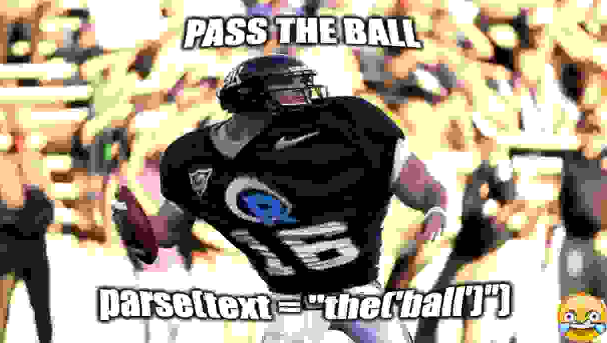

x = subset(mtcars, subset = carb == 8)
tl;dr
R is capable of reading R code. Obviously. You can use getParseData(parse()) to see what’s going on. A very naive intro.
At an imparse
There’s many things that delight me about R coding.2 One meta thing I like is the idea that R has to recognise the code that you give it as… R code.
For example, does x<-1 mean ‘x is less than minus-one’? Hm, actually R recognises <- as a ‘left-assignment operator’—a special ‘token’—that gives the name x the value of 1. Subtle, but important.
Another example: the tokens <- and = have an equivalent role in x <- 1 and x = 1. For style reasons, you’ll probably want to replace = with <-.3 But don’t just ‘find and replace’ because = is context dependent. Consider:
Here, = is used to assign (=), to set a function argument (=) and as part of the equivalence operator (==). Oof.
How can a mere human understand this better?
Parsed tense
The cool (‘cool’) thing is that R gives you tools to be able to see the world as R sees it.
This is sometimes called ‘static code analysis’, in that you can interrogate the code for syntax errors before it executes. Packages like {lintr} can even help tidy up (‘lint’) your code by adjusting or replacing the tokens.4
I’ve used this approach before to:
- create the {r2eng} package, which matches tokens against words so an expression can be translated to English (e.g.
<-is matched to the word ‘gets’) - write an RStudio addin that auto-labels closing parentheses with the name of the function they belong to (known cutely as a ‘biscuit’)
- identify and destroy files that contain equals assignment (
x = 1), rather than the superior assignment arrow (x <- 1)
How might you tinker about with this yourself? Read on for a quickstart.
Parse the parcel
I’ll talk about two main functions: parse() and getParseData(), which are both part of base R.
You can pass a string of R code to parse() for it to be recognised as an ‘expression’. Let’s use the equals-rich subset() example from above.
code_str <- "x = subset(mtcars, subset = carb == 8)"
code_expr <- parse(text = code_str)
code_exprexpression(x = subset(mtcars, subset = carb == 8))class(code_expr)[1] "expression"So the string is recognised as R code at this point, which will allow us to break it down into its individual tokens. You could jump ahead here and just eval()uate this expression object.
eval(code_expr)
x mpg cyl disp hp drat wt qsec vs am gear carb
Maserati Bora 15 8 301 335 3.54 3.57 14.6 0 1 5 8As a result, the dataframe x is now in our environment and, as expected, contains only rows of the mtcars that have 8 carburetors.5
So we have the power to delay code execution, like some kind of wizard. Jeepers! That’s great, but now lets pick apart the frozen expression into its constituent tokens. This is where getParseData() comes in.
The function takes an expression object as the input and returns a dataframe with one token per row and several columns of handy information related to positioning and the relatedness between the tokens.
For now I’m going to simplify the output to show only the units of text that have been recognised as tokens, along with the name that R gives to each token under the hood (e.g. <- is recognised as LEFT_ASSIGN).6
code_parsed <- getParseData(parse(text = code_str, keep.source = TRUE))
code_parsed[code_parsed$text != "", c("text", "token")] text token
1 x SYMBOL
2 = EQ_ASSIGN
5 subset SYMBOL_FUNCTION_CALL
6 ( '('
8 mtcars SYMBOL
9 , ','
14 subset SYMBOL_SUB
15 = EQ_SUB
16 carb SYMBOL
17 == EQ
19 8 NUM_CONST
21 ) ')'Oh neato, so you can see = is indeed recognised as the token EQ_ASSIGN (‘equals assign’), = as EQ_SUB (equals in the context of supplying function arguments) and == as in EQ (the equivalence operator).
If you’re wondering, the keep.source = TRUE bit was needed to encourage parse() to return its output, which is a necessary step within this non-interactive blog post.
Parseltongue
Want to take a look at the tokens in a given string of R code yourself? You can use this little function that contains parse() and getParseData() and returns you the simplified dataframe I showed above if simplify = TRUE, otherwise it gives the full read out.7
parse_out <- function(string, simplify = TRUE) {
p <- parse(text = string, keep.source = TRUE)
pd <- getParseData(p)
if (simplify) {
keep_cols <- c("token", "text")
pd <- pd[pd$text != "", keep_cols]
}
pd
}So you could use it like:
parse_out(
"mean(CO2[CO2$Plant == 'Qn1', CO2$uptake]) -> mean_uptake"
) token text
1 SYMBOL_FUNCTION_CALL mean
2 '(' (
4 SYMBOL CO2
5 '[' [
7 SYMBOL CO2
8 '$' $
10 SYMBOL Plant
12 EQ ==
13 STR_CONST 'Qn1'
14 ',' ,
20 SYMBOL CO2
21 '$' $
23 SYMBOL uptake
25 ']' ]
30 ')' )
35 RIGHT_ASSIGN ->
36 SYMBOL mean_uptakeNote
Since I wrote this post, it’s become possible to include editable R blocks in a rendered Quarto document, which can be run in the browser thanks to WebR(!). I’ve made a quick demo and post so you can play around with a simplified version of the parsing function above.
Lateral parse
I’ll leave you with another interesting thing that shows you the inner workings of R, which you might not realise as you run your code. We can look at how the code is actually executed, not just the tokens that it’s composed of.
Consider how the {magrittr} pipe %>% is used. Here I’ve slightly adjusted the input to filter for 6 and 8 carburetors; you’ll see why in a second.
parse_out("mtcars %>% subset(carb %in% c(6, 8))") token text
1 SYMBOL mtcars
2 SPECIAL %>%
4 SYMBOL_FUNCTION_CALL subset
5 '(' (
7 SYMBOL carb
8 SPECIAL %in%
10 SYMBOL_FUNCTION_CALL c
11 '(' (
13 NUM_CONST 6
15 ',' ,
19 NUM_CONST 8
21 ')' )
26 ')' )Okay yeah, %>% is recognised as a token called SPECIAL between the left-hand side of mtcars and the right-hand side of subset(carb %in% c(6, 8)). Notice also that %in% is also recognised as SPECIAL.
In fact, this is how R recognises ‘infix operators’ that are bound by percent symbols. This is some special syntactical magic that lets you put the function name between two arguments. So x %>% head is equivalent to `%>%`(mtcars, head). Perhaps SPECIAL instead of a more specific name because infix operators can be created on the fly?
If %>% is SPECIAL, how do you think the base pipe is recognised in this simpler example?
parse_out("mtcars |> head()") token text
1 SYMBOL mtcars
2 PIPE |>
4 SYMBOL_FUNCTION_CALL head
5 '(' (
7 ')' )Not that surprising: it’s recognised as PIPE and not a SPECIAL, since it’s a proper base R token in its own right (as of R v4.1) .
Okay, so we’ve seen how R parses these tokens, what about how it actually executes the code? One way to see this is to look at an ‘abstract syntax tree’ with the {lobstr} package.8 A ‘tree’ to show the nested structure of code and variables and so on.
library(lobstr) # install from CRAN
library(magrittr) # install from CRAN
ast(mtcars %>% head())█─`%>%`
├─mtcars
└─█─head Yeah, like I said: x %>% head() is ultimately executed by R like a normal function (block symbol in the output from ast() above), in the form `%>%`(mtcars, head). You can see how the `%>%` is a parent to mtcars and head() below it.
So the same happens for the base pipe, right?
ast(mtcars |> head())█─head
└─mtcars Surprise! mtcars |> head is not executed like `|>`(mtcars, head). It’s literally executed like head(mtcars). The base pipe is so special because it’s baked right into the R source code as a separate type of token that is recognised to have a job distinct from a basic SPECIAL. This should make it a little faster to run compared to %>% as well.
Parse away
Well, ‘cool’ I guess. Now it’s up to you: you can either parse on this knowledge, or leave it in the parsed.9
Environment
Session info
Last rendered: 2023-07-17 18:08:02 BSTR version 4.3.1 (2023-06-16)
Platform: aarch64-apple-darwin20 (64-bit)
Running under: macOS Ventura 13.2.1
Matrix products: default
BLAS: /Library/Frameworks/R.framework/Versions/4.3-arm64/Resources/lib/libRblas.0.dylib
LAPACK: /Library/Frameworks/R.framework/Versions/4.3-arm64/Resources/lib/libRlapack.dylib; LAPACK version 3.11.0
locale:
[1] en_US.UTF-8/en_US.UTF-8/en_US.UTF-8/C/en_US.UTF-8/en_US.UTF-8
time zone: Europe/London
tzcode source: internal
attached base packages:
[1] stats graphics grDevices utils datasets methods base
other attached packages:
[1] magrittr_2.0.3 lobstr_1.1.2
loaded via a namespace (and not attached):
[1] digest_0.6.31 fastmap_1.1.1 xfun_0.39 fontawesome_0.5.1
[5] knitr_1.43.1 htmltools_0.5.5 rmarkdown_2.23 cli_3.6.1
[9] compiler_4.3.1 rstudioapi_0.15.0 tools_4.3.1 evaluate_0.21
[13] yaml_2.3.7 crayon_1.5.2 rlang_1.1.1 jsonlite_1.8.7
[17] htmlwidgets_1.6.2Reuse
CC BY-NC-SA 4.0